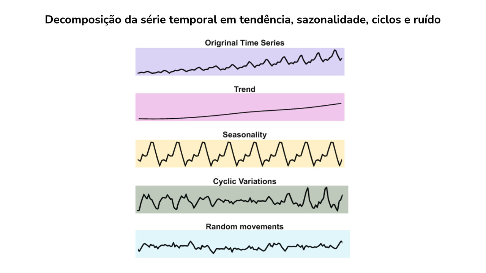
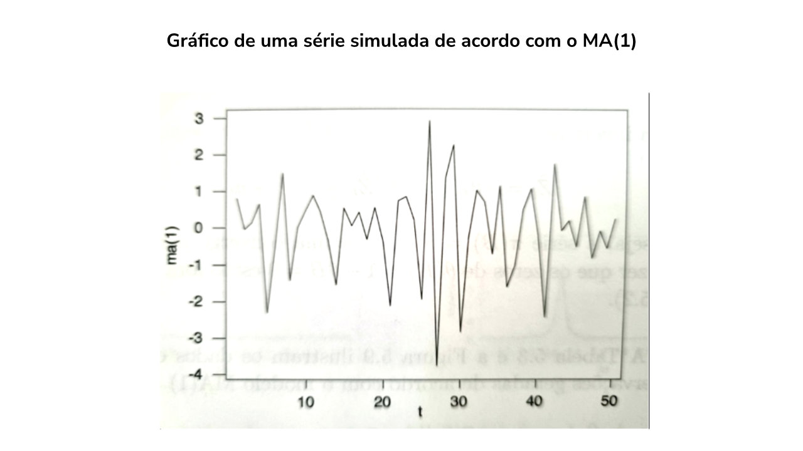
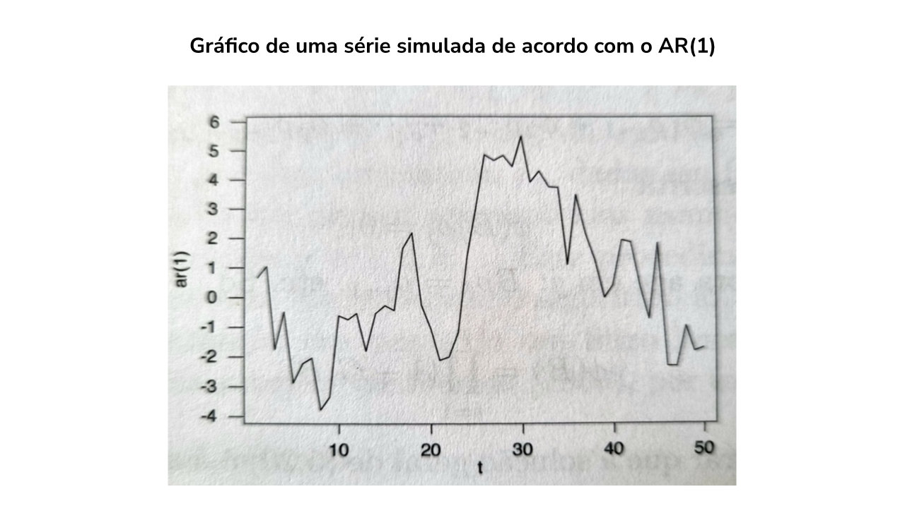
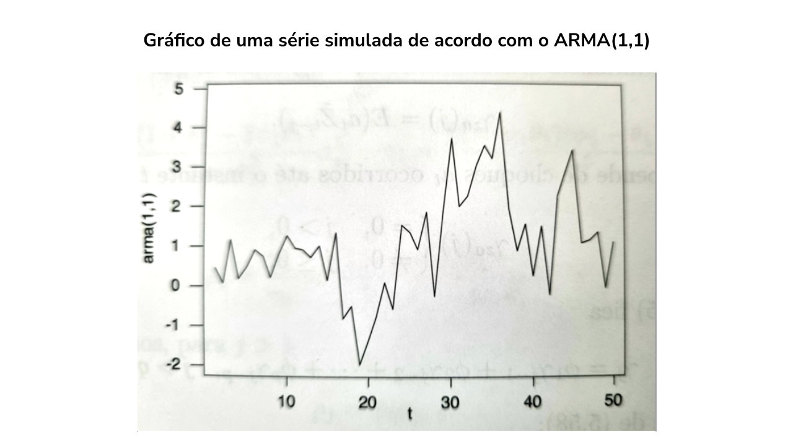
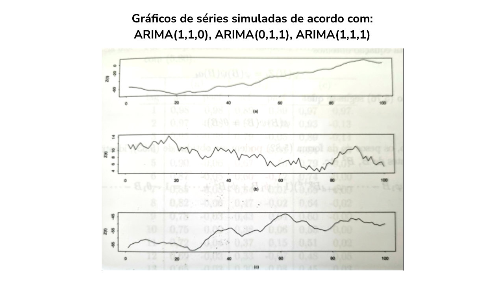
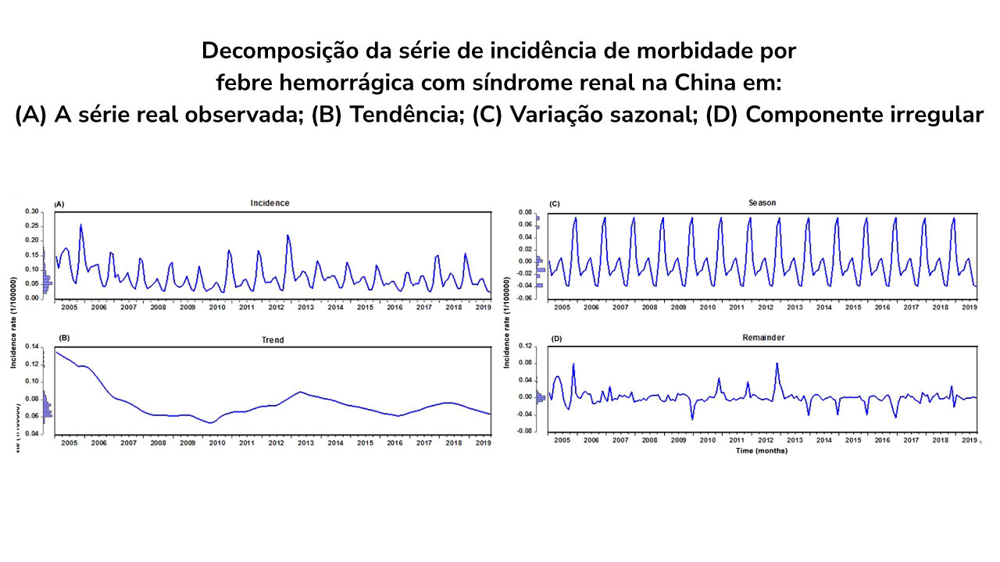

Módulo 3 | Aula 3
Dados com estruturas de dependência: multiníveis, séries temporais e espaciais e sobrevida
Modelos de Séries Temporais
A modelagem de séries temporais é voltada para dados coletados em intervalos de tempo regulares como dias, semanas, meses ou anos, com o objetivo de identificar padrões, tendências e sazonalidades ao longo do tempo. Para profissionais de saúde, isso pode ser muito útil para monitorar e prever variáveis de saúde, como epidemias sazonais, taxa de internação nos hospitais, uso de medicamentos ou número de atendimentos em hospitais.
A análise de séries temporais tem como finalidade entender como a variável de interesse se comporta ao longo do tempo, permitindo identificar padrões temporais como:
Esses padrões, entretanto, não se apresentam necessariamente de forma isolada. Normalmente, uma série temporal apresenta um ou mais dos padrões mencionados. Uma forma interessante de se avaliar quais padrões as séries temporais apresentam é decompô-las em tenência, sazonalidade, ciclo e ruído, como na figura a seguir.

Um conceito importante na modelagem de séries temporais é o de estacionariedade. Um processo é dito estacionário se propriedades estatísticas da série (como média, variância) permanecem constantes ao longo do tempo. Essa estabilidade é fundamental por garantir a consistência das estimativas estatísticas e que testes estatísticos e intervalos de confiança permaneçam válidos, já que a distribuição de erros e parâmetros não muda ao longo do tempo.
Nesse momento você deve estar se perguntando: mas uma série com tendência (por exemplo) não tem média constante? Logo, isso significa que eu não consigo modelá-la usando séries temporais? A resposta é “não”: você precisará “tratar” essa série (tomando diferenças, por exemplo) para, então, ser possível sua modelagem. Então, calma! Temos modelos de séries temporais com essa etapa já construída dentro deles, como veremos mais à frente (modelos ARIMA).
Veja agora, os modelos clássicos usados para séries temporais.
Modelo de médias móveis
Modelo linear em que o valor atual de uma série temporal é definido como uma combinação linear dos erros passados (ruído aleatório) mais um termo de média. É denotado por MA(q), pois q é a quantidade de dias passados usados na suavização dos dados. Pode ser formulado como:
Exemplo
Modelo MA(1) gerador da série simulada na figura abaixo:

Modelo Autorregressivo
É um modelo em que o valor atual de uma série temporal é explicado como uma combinação linear dos valores passados dessa mesma série. É denotado por AR(p), em que p é a quantidade de dias passados usados na modelagem. Pode ser formulado como:
Em que:
- Zt é a série temporal no tempo, t.μé a média da série.
- φp é o peso estimado de Zt-p
- at é o erro no tempo t, de média zero e variância σa2
- θq é o peso estimado de at-q.
Exemplo
Modelo AR(1) gerador da série simulada na figura a seguir:

Modelo Autorregressivo de médias móveis
É a combinação dos dois apresentados anteriormente. Denotado por ARMA(p,q), é formulado como sendo:
Em que os parâmetros têm a mesma interpretação dos modelos MA(q) e AR(p).
Exemplo
Modelo ARMA(1,1) gerador da série simulada na figura:

Modelo Autorregressivo de médias móveis integrado
São modelos usados para séries temporais com tendências. Enquanto a parte autorregressiva (AR) continua capturando a dependência linear com os valores passados da própria série, a parte de médias móveis (MA) captura a dependência com os erros passados (resíduos) da série. A integração (I) torna a série estacionária ao diferenciar os valores (subtrair os valores passados) para remover tendências e garantir que tenha uma média constante. Denotado por ARIMA(p,d,q), é formulado como sendo:
Em que os parâmetros têm a mesma interpretação dos modelos MA(q) e AR(p), sendo que os termos são relativos à parte autorregressiva, e d é o grau de diferenciação, ou seja, o número de vezes em que os dados tiveram valores anteriores subtraídos. Em resumo, se precisamos diferenciar a série Zt uma vez para torná-la estacionária, estamos lidando com um processo integrado de ordem 1 ou, alternativamente, um processo I(1), ou um ARIMA com d=1.
Exemplo
ARIMA(1,1,0) com φ = 0,8, ARIMA(0,1,1) com θ = 0,3, e ARIMA(1,1,1) com φ = 0,8 e θ = 0,3, geradores das séries simuladas na figura abaixo:

A essa altura vocês já devem ter notado que o céu é o limite. Podemos incluir facetas das séries a serem modeladas até que, delas, sobre apenas um ruído aleatório. Para não nos alongar no tema, fechamos apresentando os modelos com sazonalidade.
Modelo Autorregressivo de médias móveis integrado sazonal
O modelo SARIMA (Autorregressivo de médias móveis integrado sazonal) é uma extensão do modelo ARIMA, incluindo componentes sazonais. É denotado por SARIMA(p, d, q)(P, D, Q)m, em que:
p: Ordem da parte autorregressiva (AR).
d: Ordem da diferenciação para tornar a série estacionária.
q: Ordem da média móvel (MA).
P: Ordem autorregressiva sazonal.
D: Ordem da diferenciação sazonal.
Q: Ordem da média móvel sazonal.
m: Período da sazonalidade (ex.: 12 para dados mensais).
Os componentes autorregressivos e de médias móveis são aplicados tanto na parte "não sazonal" quanto na parte sazonal, o que permite capturar variações cíclicas recorrentes e previsíveis nos dados ao longo de um intervalo regular (por exemplo, meses, trimestres ou anos).
Exemplo
Decomposição da série de incidência de morbidade por febre hemorrágica com síndrome renal na China: (A) A série real observada; (B) Tendência; (C) Variação sazonal; (D) Componente irregular. Conforme ilustrado, houve um traço sazonal pronunciado na série de morbidade.
Modelo estimado para a série: SARIMA(0,1,3)(1,1,0)12.

Faça você mesmo!
É hora de praticar! No script modulo3aula3_atividades.R (Atividade 2), decomponha uma série temporal de casos de síndrome gripal em tendência, sazonalidade e ruído. Ajuste um modelo ARIMA e faça previsões para as próximas semanas.